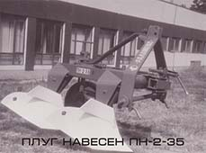
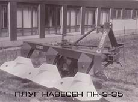
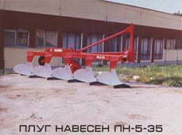

Началото на „Раломекс” е поставено на 01.01.1976 год. със заповед № І – 35 от 10.02.1976 г. на Министъра на земеделието и хранителната промишленост, считано от 01.01.1976 г., с която са определени терен и сгради от тогавашната хидромелиоративна станция в гр.Завет за създаването на машиностроителен завод, на основата на промишлената дейност на хидромелиоративната станция. За директор на завода е назначен инж. Петко Христов, който успява да запали с ентусиазма си хората и поставя добри основи за бъдещето му развитие. Започва дейност с 240 души персонал. Произвежда кооперирани детайли за силажокомбайни “КИР-1,5” за МЗ”Георги Димитров” гр.Русе, детайли, възли и отливка от сив чугун за сеялки за МЗ”Иван Йонков” гр.Трявна, възли и детайли за МЗ”Победа” гр.Трявна. Същата година като собствено производство започва производството на приспособление за вършитба на люцерна и комбайни за прибиране на моркови възложени от Министерството на земеделието и хранителната промишленост без да има необходимата конструктивно-технологична документация – само по доставени образци.
През следващата 1977 година се усвоява производството на плугове – навесни с корпус 25 см и прикачни с корпус 30 см, като се приема производството им от завода за малки трактори гр.Русе. Същата година започва и производството на тракторни валяци.
През 1979 година завода вече е в състава на Стопански комбинат “Г.Димитров” гр.Русе и се ръководи от Асен Асенов – изпратен да оглави завода. Изпращат се и екипи от гр.Русе за укрепване на отделните звена – технологично-конструктивни, енерго-механични, контролни, производствени. Усъвършенстват се плуговете, разширява се тяхната номенклатура. По-късно започва и подготовка за усвояване на производството на нова генерация плугове и приспособление за силажиране на редови култури.
В началото на 1980 година Асен Асенов е сменен с инж.Ангел Генев. Усвоява се производството на триредово приспособление към силажокомбайна КСС-100Т, разширява се гамата от плугове – усвоява се производството на обръщателен плуг ПНО-3-25 за трактор “Мургаш-45” и плуг ПП-1,6. Усилено се произвеждат тракторни валяци, като годишното производство достига до 1600 броя. В решителна фаза e и строителството на две халета под формата на складове. Леярското производство и заваровъчния цех все още са в сградите на ХМТС. Сериозно се стабилизира организацията на производството. Постоянно се увеличава персонала и производството.
инж. Петко Христов
Асен Асенов
инж.Ангел Генев
инж.Мехмед Узунов
През м.ноември 1981 година заводът все още в състава на стопанския комбинат “Г.Димитров” гр.Русе, но поради преминаване на друга работа инж.Ангел Генев напуска и за директор е издигнат инж.Мехмед Узунов, който и до днес е на този пост, посветил целия си професионален и трудов стаж в утвърждаване на името и просперитета на предприятието.
През 1982 година започва серийно производство на плугове от нова генерация – с хидравлично задействане на привеждането от работно в транспортно положение с представител ПП-1,6 – произведени са общо 490 бр. Дотогава са произведени и 2474 бр. плуга П-4-30 МБ. Плуг ПП-1,6 получава златен медал на Пловдивския Международен панаир. Производството на ПРК-3 продължава до 1990 г. Когато се снема от производство са произведени общо 2539 бр. През същата година се заселват новите корпуси – механо-монтажен и заваровъчен и административен комплекс. Продължава работното проектиране на площадката от ИП”Машпроект” гр.Русе.
През 1987г. започва производството на агрегати за директна сеитба – първо за редови култури, а по-късно и за култури за слята повърхност – собствени разработки. Поради стремежа за въвеждане на минимални обработки наложени в земеделието през 1988 г. започва редовно производство на сеялка за директна сеитба СДС-3,6 разработка на основата на сеялка “ХАУАРД”, произведена е пробна серия от 20 бр. и редовна серия от 100 бр. През тези години развитието на плуговото производство изостава. По-късно през деветдесетте години производството на плугове се възобновява, утвърждава се през годините и съхранява до днес.
Настъпва периодът на работа в нови икономически условия – преход от планова към пазарна икономика. Кризата която настъпва в българското земеделие след 1989 година довежда до значително ограничаване на производството, В резултат на това през 1990 г. започва намаляване на търсенето на плугове и триредово приспособление ПРК-3А. Започва преструктуриране на производството – за сметка на големи плугове започва усвояване и производство на малки плугове с 1,2,3 тела с 20 см и 25 см корпус.
През годините е извършен износ на плугове ПН-4-25 за Виетнам, ПН-3-35 за Албания и Корея, дискови плугове и култиватори за Мароко, плугове и брани за Гърция, обръщателни плугове и култиватори и животински плугове за Алжир., дискови плугове за Нигерия, плугове за Румъния.
През 1991 година със заповед № РД-1785 от 26.08.1991 се преустановява дейността на ОСО”Агромашина” и се създава търговско дружество с ограничена отговорност с управител инж.Мехмед Узунов и се регистрира, като такъв в Разградски Окръжен Съд с решение № 44. Приема името “РАЛОМЕКС” – съчетаващо старобългарското име на плуг, други машини и експорт на продукцията.
През 1993 г. се поставя началото по усвояване с ускорени методи на култиватори за слята обработка – КСН (навесни), а по-късно и КСП (прикачни) в началото с работна ширина 2,4 и 3,8 м, а от 1994 г. и с работна ширина 7,2 и 8 м., които през 2003 г. достигат до 10 и 12 метрови. През 1994 г. започва усвояване и производство на дискови брани – в началото с работна ширина 2,5 и 5 м, а по-късно и целия ред от 2 до 9 м.

Значителен успех дружеството постига през 1999 с усвояването на нови изделия – цяла гама обръщателни плугове, комплектация на култиваторите за слята обработка с роторни брани, зъбни брани. Запълва се реда плугове, култиватори и брани, за което е отличен с „ГРАМОТА – първо място-български производител” на Седмото международно изложение „Селското стопанствоо и всичко за него – Добрич/99”
След 2002 г. производството започва да се увеличава с темпове около с 25% годишно. Следствие на което започва ново строителство по завършване на първи корпус и закупуване на оборудване. През Януари 2005 год. корпуса се заселва с производствени машини, в резултат на което са ликвидирани кръстосаните технологични потоци. Рязко се подобряват условията на труд и признанието не закъснява. На Десетото международно изложение „Селското стопанство и всичко за него – Добрич 2002” колективът е отличен с грамота за комплексно представяне.
За "Раломекс" АД 2006г. започва бурно с официалните празненства на 30- годишният юбилей. На специален коктейл присъстваха над 200 официални гости, изпълнителният директор и цялото ръководство приеха поздравления от свои клиенти и доставчици, както и народните представители д-р Хасан Адемов и Дауд Осман. На официалната вачеря инж. Мехмед Узунов награди със златен плакет дългогодишни партньори на фирмата.
Водени от своето верую, че "Клиентът винаги има право", констриктивно-технологичният отдел с ръководител д-р инж. Петър Богословов разработва и внедрява в производсвото специализирани почвообработващи машини като: плуг за оранжерии , култиватор за рози. Пускат се в производство серия навесни дисково брани от 1,8 до 2,2 метра. Допълва се номенклатурата на прикачните брани с X-образни такива.
С приемането на България в Европейският Съюз на 01.01.2007 г. и представените възможности за получаване на безбъзмездни финансови помощи от малките и средните предприятия "Раломекс" АД започва уселено разработване на проекти. Под ръководството на гл. инж Рашит Узунов, фирмата печели първия си проект по програма ФАР за консултантски услуги, а по късно и проект за ново технологично оборудване.
Развитието на дисковите брани навлиа в нов етап. Разработени са размери 3,8 и 4,2 както и 8 метра, на който принцип се констроира и наъ голямата брана произвеждана в България БДП-10. Успехите на фирмата през 2006 г. и през 2007 г. мотивират допълнително екипа на фирмата и се приема курс за разработване и внедряване на иновации в произвежданата продукция.
През 2008 г. се конструират и пускат в производство серия иновативни машини: разрохвачи, плугове с нова кинематика и полу автоматични предпазители както и нов тип култиватор със S-образен работен орган.
Плуговото производство се допълва и от нова генерация плугове с автоматични предпазители тип "non-stop". В производство влиза най-големият плуг произвеждан в България от този тип (ПП-10-35А).
Разработването на проекти по Европйските фондове довежда до нов успех. През 2009 г. се подписва договор за безвъзмездна финансова помощ с ИАНМСП за закупуване на високотехнологично оборудване с CNC-управлене. През 2010 г. е включено в производствения процес. Именно това оборудване дава възможност на фирмата да усвои производство на нови серии плугове регулируем тип. Разработени и пуснати в производство са регулируеми плуговеза предсеидбена и дълбока оран за всички модификации трактори.